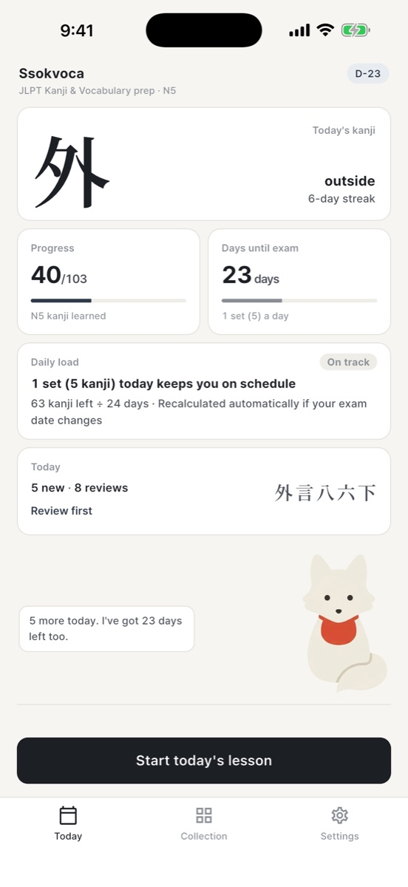
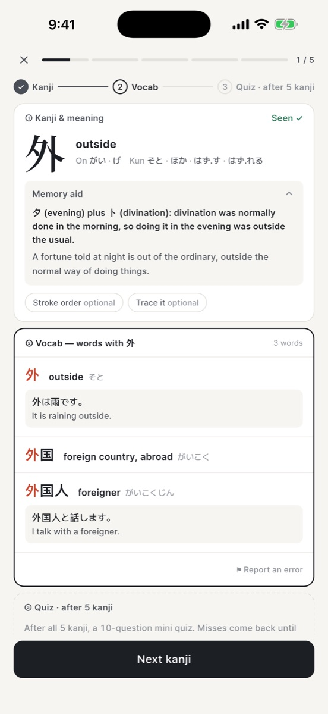
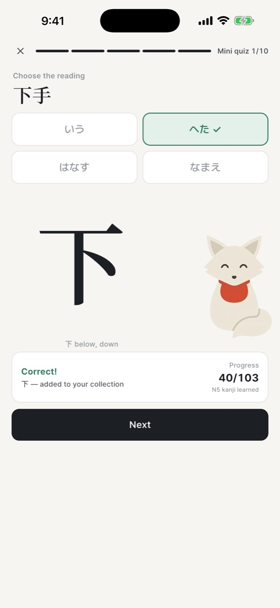
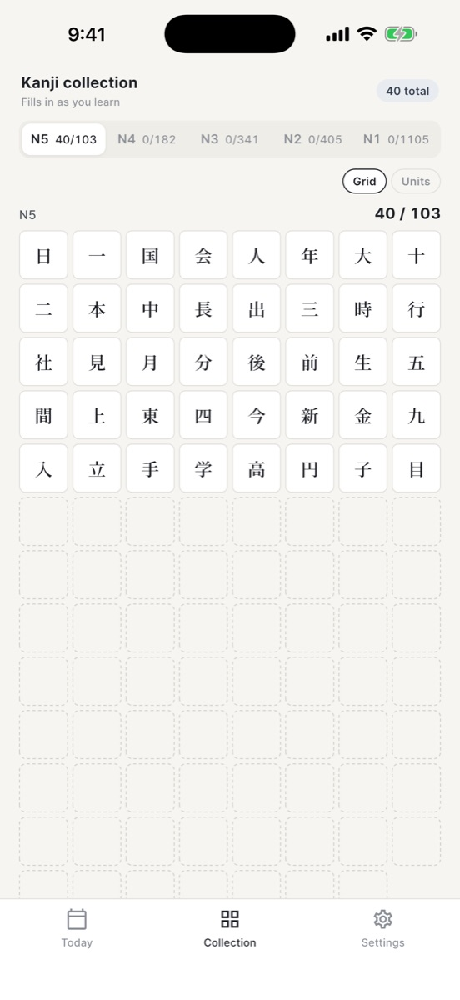

JLPT Kanji & Vocab, N5–N1
JLPT kanji,
five a day
All 2,136 joyo kanji from N5 to N1. Learn each with its meaning, check with a mini quiz, and see the ones you missed again today.
First N5 unit free · Start without sign-in · No ads

A little at a time, again before you forget
Small sets to learn, and the ones you missed come back first.
Five at a time, then a quiz
Learn a set of 5 kanji and check it right away with a mini quiz. Surprise tests show up now and then.
Missed ones come back today
Kanji you miss return today, and reviews come back around the time you would forget (FSRS spaced repetition).
Paced to your exam date
Set your exam date and get a daily amount from the kanji and days you have left. Or pick your own pace.
2,136 kanji, N5 to N1
Every kanji has its meaning, words and examples, and stroke order you can trace with your finger.
- Sign-in optional
- No ads
- Works offline
How it works
See today's set, learn it, check it, and watch it add up.



The first N5 unit is free
Try it first. Premium opens every level.
Support
Questions, or spotted a mistake? Email us.
Report a content error
Tap “Report an error” on any kanji screen to open an email with that kanji filled in. Manage subscriptions and refunds in your App Store or Google Play account.